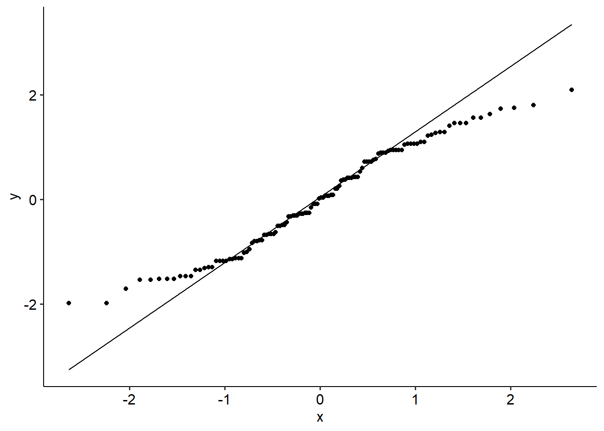

9.5 Two-way between groups ANOVA
9.5.1 Introduction
Two-way between-groups ANOVAs are used when you have two categorical IVs, both of which are between-groups variables. For example, you might have the following IVs:
- Sex: Male or female
- Experimental group: Group A or Group B
There are four possibilities here - males in Group A, females in Group A, males in Group B and females in Group B. These are mutually exclusive categories in the context of this design.
9.5.2 Example
One of the earliest modern studies on music’s effect on consumer behaviour came from Hargreaves and North, who played either French or German music in a wine shop. They looked at how much people spent on French and German wines, and tested to see whether the effect of background music and wine type had an effect on spending.
We’re going to step through an analogous (fictional) example. Pretend we played either country or classical music, and looked at when people purchased beer or wine. (We’re going to assume we’ve removed people who bought both beer and wine together.) We’re interested in whether these two variables had an effect on how much people spent. Therefore, we have two between-groups IVs:
- Alcohol type being purchased: was the person buying beer or wine?
- Genre of background music: was country or classical music being played at the time?
We therefore has two independent variables: alcohol type (beer, wine) and genre of background music (country, classical). Her dependent variable is total spend. This can be described in two key ways:
- Two-way ANOVA (alcohol type x genre)
- 2 x 2 ANOVA: more specifically, 2 (beer, wine) x 2 (country, classical) ANOVA between alcohol type and genre
We’d use a two-way ANOVA to model the effects of two IVs on one dependent variable. Let’s start by generating descriptives and a graph to visualise what we’re looking at:
twoway_alcohol %>%
group_by(alcohol_type, genre) %>%
summarise(
n = n(),
mean = mean(spend), na.rm = TRUE,
sd = sd(spend, na.rm = TRUE),
se = sd/n
) %>%
ungroup() %>%
ggplot(
aes(x = alcohol_type, y = mean, colour = genre, group = genre)
) +
geom_point() +
geom_line() +
geom_errorbar(aes(ymin = mean - 1.96*se, ymax = mean + 1.96*se), width = 0.2)
9.5.3 Assumption testing
The assumptions for a two-way ANOVA are the same as a one-way between groups ANOVA:
- The data should be independent of each other.
- Equality of variance: Look at Levene’s test:
twoway_alcohol_aov <- aov(spend ~ alcohol_type * genre, data = twoway_alcohol)
twoway_alcohol %>%
levene_test(spend ~ alcohol_type * genre)- Normality of residuals: Look at the Shapiro-Wilk test (on the residuals) or a Q-Q plot:
##
## Shapiro-Wilk normality test
##
## data: twoway_alcohol_aov$residuals
## W = 0.99647, p-value = 0.9295Both assumptions appear to be intact.
9.5.4 Output
Let’s first look at our output for the omnibus ANOVA. The way to read this table is much like the same for a one-way ANOVA, but now we need to read across each line - as each line represents a different effect.
Note that here, we use the aov_ez() function from the afex package. Because in many instances we work with unbalanced data (i.e. each group x group combination does not have the same number of participants), we tend to calculate something called Type III Sums of Squares/ANOVAs. We won’t dive too much into this, but this is essentially about how sums of squares are calculated, and how the effects are tested. Learning Statistics with R has an excellent explanation of what the various types are.
So we see that:
- There is no main effect for alcohol (p = .137),
- There is a main effect for genre (p < .001),
- Importantly, there is a significant interaction effect for alcohol x genre (p < .001).
twoway_alcohol_aov <- aov_ez(
data = twoway_alcohol,
id = "ptcpt",
dv = "spend",
between = c("alcohol_type", "genre"),
anova_table = list(es = "pes"),
include_aov = TRUE
)## Converting to factor: alcohol_type, genre## Contrasts set to contr.sum for the following variables: alcohol_type, genre## Anova Table (Type 3 tests)
##
## Response: spend
## Effect df MSE F pes p.value
## 1 alcohol_type 1, 196 1.02 2.23 .011 .137
## 2 genre 1, 196 1.02 4295.08 *** .956 <.001
## 3 alcohol_type:genre 1, 196 1.02 519.96 *** .726 <.001
## ---
## Signif. codes: 0 '***' 0.001 '**' 0.01 '*' 0.05 '+' 0.1 ' ' 1Because we have a significant interaction term, we now need to turn to conducting simple effects tests to decompose where this effect is. You might want to use something like tukey_hsd() to generate every possible pairwise comparison, like so:
Remember, for a simple effects test we want to test for differences between the levels of one variable, at every level of the other variable. In our instance, that may be comparing genre type (classical vs country) for beer purchases, and then for wine purchases.
Our post-hoc table gives us this information - but not all rows are necessarily important here. Let’s hold alcohol as a constant, and compare genre for each type of alcohol purchased. That means that we need to look for the following comparisons:
- For beer, country vs classical
- For wine, country vs classical
If we were to frame it in terms of the variables in the dataset, we would be looking for:
- Beer country - beer classical
- Wine country - wine classical
Conveniently, this is captured in the very top and bottom rows of our post-hoc output table. Let’s also run our simple effects tests using emmeans:
## alcohol_type = beer:
## contrast estimate SE df lower.CL upper.CL t.ratio p.value
## classical - country 6.11 0.202 196 5.72 6.51 30.242 <.0001
##
## alcohol_type = wine:
## contrast estimate SE df lower.CL upper.CL t.ratio p.value
## classical - country 12.64 0.202 196 12.24 13.04 62.416 <.0001
##
## Confidence level used: 0.95We can see that beer purchases were significantly greater with classical music on in the background than country (t = 30.24, p < .001). Likewise, wine purchases were also significantly greater with classical music than country music (t = 62.42, p < .001).
Of course, it might make more sense to do the simple effects tests the other way round; in other words, hold genre constant and compare how much was spent on each alcohol type. You can still absolutely find out this information, but now you would be looking for the following rows:
- For country, wine vs beer (wine country - beer country): t = 15.34, p < .001
- For classical, wine vs beer (wine classical - beer classical): t = 16.85, p < .001
## genre = classical:
## contrast estimate SE df lower.CL upper.CL t.ratio p.value
## beer - wine -3.48 0.206 196 -3.88 -3.07 -16.847 <.0001
##
## genre = country:
## contrast estimate SE df lower.CL upper.CL t.ratio p.value
## beer - wine 3.05 0.198 196 2.66 3.44 15.378 <.0001
##
## Confidence level used: 0.959.5.5 Write-up
A two-way ANOVA was conducted to test whether alcohol type and music genre had an effect on spending habits. We found a significant main effect of music genre (F(1, 196) = 4295.08, p < .001) but no significant main effect of alcohol type (p = .137). We found a significant two-way interaction between alcohol type and genre (F(1, 196) = 519.97, p < .001). To follow up this two-way interaction, we conducted simple effects tests. The simple effect of genre was analysed for each level of alcohol type with Holm corrections. On average, people spent $6.11 more on beer if they heard classical music compared to country music (t(196) = 30.242, p < .001). Likewise, on average people spent $12.64 more on wine if they heard classical music compared to country (t(196) = 62.416, p < .001).